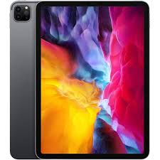

Tablets · Big screens
iPad Pro or Galaxy Tab S11 Ultra: the big tablet choice
One ships with a pen in the box. The other charges extra for one. Past that, the two take different paths to the same goal: a large screen you can draw, write and work on.


Why these two tablets
Apple launched the M5 iPad Pro on 22 October 2025. Samsung launched the Galaxy Tab S11 Ultra a few weeks earlier, on 4 September 2025. Both are still each company's flagship tablet in September 2026. That makes this a fair fight between what each brand currently sells at the top.
We picked the larger model from each side. The iPad Pro comes in 11-inch and 13-inch sizes, and we compare the 13-inch here. The Galaxy Tab S11 also comes in a smaller standard size, and we compare the bigger Ultra. Both are aimed at people who want the most screen, not the lightest tablet.
- Stylus: a pen you use to write or draw on the screen. Apple calls its version Apple Pencil. Samsung calls its version S Pen.
- Refresh rate: how many times the screen redraws each second. A higher number feels smoother when you scroll or draw.
- Nits: a unit of screen brightness. A higher number means the screen is easier to see in bright light.
Side by side
In short: the two cost almost the same. The iPad wins on raw chip speed. The Galaxy Tab wins on screen size and includes its pen for free.
See the full spec comparison
| Spec | iPad Pro 13-inch (M5) | Galaxy Tab S11 Ultra |
|---|---|---|
| Released | 22 October 2025 | 4 September 2025 |
| Screen | 13 in Tandem OLED, 120Hz, up to 1,600 nits HDR | 14.6 in Dynamic AMOLED 2X, 120Hz, HDR10+ |
| Chip | Apple M5, 9-core CPU, 10-core GPU | MediaTek Dimensity 9400 Plus, 3nm |
| Memory | 8GB on the 256GB and 512GB models; 16GB on 1TB and 2TB | 12GB |
| Storage | 256GB up to 2TB, no card slot | 256GB or 1TB, plus a microSD slot up to 2TB |
| Battery | About 10,290 mAh | 11,600 mAh |
| Weight | About 582 g | About 690 g |
| Pen | Apple Pencil Pro, sold separately | S Pen, included in the box |
| Keyboard | Magic Keyboard, sold separately | Book Cover Keyboard, sold separately |
| Unlock | Face ID | In-screen fingerprint |
| Software at launch | iPadOS 26 | Android 16, One UI |
| Starting price (US) | $1,299 (256GB) | $1,199 (256GB) |
Sources: Apple's and Samsung's product pages, plus PhoneArena, TrustedReviews and Gadget Hacks. Apple does not state the exact memory for every tier in all markets. Treat the 8GB and 16GB figures here as a general guide.
Screens
In short: the Galaxy Tab has the bigger screen. The iPad Pro's screen reaches a higher peak brightness, which helps outdoors.
Read the details on screens
The Galaxy Tab S11 Ultra has the larger panel at 14.6 inches, against 13 inches on the iPad Pro. Both run at 120Hz, which makes scrolling and drawing feel smooth.
Apple uses a screen it calls Tandem OLED. It stacks two OLED layers to reach up to 1,600 nits in bright HDR content. Samsung's Dynamic AMOLED 2X panel supports HDR10plus, and it looks rich and colourful. Even so, reviewers have generally found the iPad brighter in direct sunlight.
For most indoor use, both screens look excellent, and the difference will not matter. If you often work outside, the iPad Pro's extra brightness is the more noticeable advantage.
The pen question
In short: Samsung puts its S Pen in the box at no extra cost. Apple sells the Pencil Pro separately, for about $79.
Read the details on the pen
This is the clearest practical difference between the two. Every Galaxy Tab S11 Ultra comes with an S Pen in the box, ready to use the moment you unbox it. The Apple Pencil Pro is Apple's equivalent stylus. It is sold on its own for around $79, and no iPad Pro configuration includes it.
Both pens support pressure sensitivity and tilt, so they feel natural for note-taking, sketching and marking up documents. Reviewers who have compared the two generally rate the Apple Pencil Pro as the more refined drawing tool. It adds extra features, like a squeeze gesture that brings up a tool palette. The S Pen remains a capable, comfortable pen for writing and sketching. For many people, the fact that it is free will matter more than small differences in feel.
If writing or drawing is central to why you want a tablet, factor the Pencil Pro's price into the total cost. Only then does comparing the iPad Pro with the Galaxy Tab become fair.
Chip and everyday speed
In short: the M5 chip gives the iPad Pro a real lead in raw performance, especially for heavy creative work. Both tablets are fast enough for browsing, video and everyday apps.
Read the details on chip and speed
Apple's M5 is the same family of chip used in recent MacBook Pro and Mac mini computers. It is not a phone chip scaled up. Reviewers describe it as a significant step over the previous M4. The gains stand out most in video export and on-device AI processing.
Samsung's Dimensity 9400 Plus is a strong chip in its own right. It comfortably handles everyday multitasking, split-screen apps and most games. It does not match the M5 in heavier, sustained creative work. Exporting long 4K video projects or running demanding desktop-class software is where that gap shows.
For browsing, streaming, note-taking and video calls, you will not notice a speed difference between the two. The gap shows up mainly for people editing video, working with large creative files, or running desktop-grade apps.
Software and multitasking
In short: iPadOS is tighter and more consistent but still limits some desktop-style work. Android on a big Samsung tablet feels closer to a small laptop, with more flexible windows.
Read the details on software
iPadOS 26 includes Stage Manager, which lets you resize and overlap several app windows at once, closer to how a computer works. It also brings Apple Intelligence features for writing, image tools and on-device AI tasks. Some of these features arrive in stages, by language and region.
Samsung's One UI, built on Android, has offered flexible floating and split-screen windows for longer. Many reviewers find it a more natural fit for genuine multitasking on a large screen. Samsung's own Galaxy AI tools cover writing help, translation and note summaries, with deep integration into its own apps.
Neither system fully replaces a laptop for demanding work, despite both companies pushing in that direction every year. If you mainly want a large screen for watching, reading, note-taking and light work, either system will serve you well. If you lean on true multi-window productivity often, Samsung's approach currently feels the more mature of the two.
AI features on a tablet
In short: Samsung's Galaxy AI has been on tablets longer and covers more everyday tasks today. Apple Intelligence is catching up, with some features still rolling out by language and region.
Read the details on AI features
Samsung brought Galaxy AI to its tablets earlier than Apple brought its own AI tools to iPadOS, and that head start shows. The Galaxy Tab S11 Ultra includes live translation during calls and messages, note summaries, and tools that clean up or expand your handwriting into typed text, all built directly into Samsung's own apps.
Apple Intelligence arrived on the iPad Pro with iPadOS 26, and it covers writing tools across most apps, image generation, and smarter search through your files and photos. Apple has also been expanding Siri with deeper AI features this year, though the most capable versions need recent hardware and are not yet available in every region, including the European Union at launch.
Both companies are adding features every few months, so any snapshot of AI tools will look dated within a year. If AI features matter to you today, Samsung's tools are more complete right now. If you are buying mainly for the hardware and expect AI to improve over time either way, this should not be the deciding factor.
Keyboards and turning it into a laptop
In short: both keyboards are sold separately. Apple's Magic Keyboard costs more than Samsung's Book Cover Keyboard.
Read the details on keyboards
Apple's Magic Keyboard for the iPad Pro costs around $349. It includes a trackpad, a floating hinge design, and keys with proper travel, closer to a laptop keyboard than most tablet accessories.
Samsung's Book Cover Keyboard for the Galaxy Tab S11 Ultra costs around $209, noticeably less. It also includes a trackpad, and it folds to protect the screen. Even so, reviewers generally rate its typing feel a step behind Apple's keyboard.
If you plan to use either tablet as your main writing device, budget for the keyboard from the start. Together with the pen question above, it changes the real cost gap between the two tablets more than the sticker prices suggest.
Battery life and everyday use
In short: both last a full day of normal use. The Galaxy Tab has the larger battery on paper, but Apple's efficient chip keeps the iPad close behind.
Read the details on battery life
The Galaxy Tab S11 Ultra carries a bigger battery, rated at about 11,600 mAh. The iPad Pro's battery is smaller on paper, at roughly 10,290 mAh. A bigger battery alone does not ensure longer life. Screen size, chip and software all affect how far it actually stretches.
Apple has a long-standing reputation for software that squeezes real-world use out of a smaller battery. The efficient M5 chip continues that pattern. Samsung's larger battery has to power a bigger, brighter screen, which uses some of that extra capacity back up.
In practice, reviewers of both tablets report comfortable all-day battery life for browsing, video and note-taking. Heavier tasks, like gaming or video editing, drain either tablet noticeably faster. Neither tablet stands out as a clear loser here, so battery life alone is unlikely to decide this choice for most buyers.
Charging speed favours Samsung slightly on paper, with faster wired charging support in some regions. Actual charging time still depends on the charger you use. Both tablets charge over USB-C, so cables and chargers are interchangeable with most modern phones and laptops.
Cameras, speakers and build quality
In short: neither tablet is meant to replace your phone's camera. Speakers and build quality are strong on both, with small differences in detail.
Read the details on cameras, speakers and build
Tablet cameras exist mainly for video calls and document scanning, not everyday photography. The iPad Pro uses a single 12-megapixel rear camera. The Galaxy Tab S11 Ultra adds a second ultrawide lens alongside its 13-megapixel main camera. That gives it slightly more flexibility for scanning documents or wide video calls.
Front cameras matter more on a tablet, since video calls are a common use case. Both tablets place the front camera along the landscape edge. Your eyes line up naturally with the lens when the tablet is propped up sideways. It is a small detail that smaller or older tablets often get wrong.
Speaker quality is strong on both. Apple has long fitted its iPad Pro line with a four-speaker system. It adjusts its sound based on how you are holding the tablet. Reviewers continue to rate it among the best tablet speakers available. Samsung also fits a multi-speaker array on the Tab S11 Ultra, tuned with AKG. It holds up well for video and music, even if most reviewers still give Apple a slight edge here.
Both tablets use aluminium frames and carry an IP68 rating. That means they resist dust and can survive brief exposure to water. Neither is designed to be dropped repeatedly. A case remains a sensible investment for either one, especially if children will also use the tablet.
Which fits you
Answer a few short questions, and see which tablet suits your habits best. Everything runs locally in your browser, with nothing recorded.
Quick fit check
Choose whichever answer feels closest to how you would actually use it.
1. How do you feel about the pen?
2. What other devices do you own?
3. What will you mainly do on it?
4. How do you feel about storage expansion?
Who tends to prefer which
People who tend to prefer the iPad Pro
- Anyone with a Mac, iPhone or Apple Watch already
- Video, music or photo editors who want the fastest chip
- People who want the brightest screen for outdoor use
- Buyers who do not mind paying extra for the pen
People who tend to prefer the Galaxy Tab S11 Ultra
- Anyone who wants a pen included at no extra cost
- People who rely on true multi-window multitasking
- Buyers who want a memory card slot for extra storage
- Android users who want a tablet that matches their phone
Four short cases
The student taking notes in class. Either tablet handles handwritten notes well. The Galaxy Tab S11 Ultra saves you the extra pen purchase, which matters on a student budget.
The person who already owns a MacBook or iPhone. The iPad Pro slots into that setup with features like Universal Clipboard and Handoff. You can copy on one device and paste on another without thinking about it.
The video editor on the move. The iPad Pro's M5 chip gives it real speed here. Apps like Final Cut Pro for iPad add a genuine edge for serious editing away from a desktop.
The multitasker who keeps several apps open at once. Samsung's more flexible floating windows make the Galaxy Tab S11 Ultra feel more like a small laptop for this kind of work.
Add the pen and keyboard that both tablets usually need. The total cost of each setup ends up closer than the starting prices suggest. Decide based on the software and accessories you will actually use daily, not the headline price alone.
Buying in Uzbekistan
Prices above are US prices, so expect a different figure at a local shop. These checks are worth running through before you pay.
- Confirm the warranty terms. An official Apple or Samsung seller usually backs the tablet with local repair support. An unofficial import can look cheaper at first and cost more the day it needs service.
- Check Wi-Fi versus cellular. Both tablets come in Wi-Fi only and cellular versions. A cellular model costs more and needs a data plan, so confirm which one you are buying.
- Price the pen and keyboard together with the tablet. Neither accessory is optional in practice if you plan to write or type regularly, so include both in your budget from the start.
- Match the storage to your plans. Neither tablet lets you add storage later, apart from Samsung's memory card slot, so choose a capacity with room to grow.
Questions people ask
Does the iPad Pro come with the Apple Pencil?
No. The Apple Pencil Pro is sold separately, at around $79, on every iPad Pro configuration. The Galaxy Tab S11 Ultra includes its S Pen in the box.
Which tablet is faster?
The iPad Pro's M5 chip is faster in heavy, sustained tasks like video editing. For everyday browsing, video and note-taking, both tablets feel equally quick.
Can the Galaxy Tab S11 Ultra expand its storage?
Yes, with a microSD card up to 2TB. The iPad Pro has no card slot, so you need to choose enough built-in storage when you buy it.
Is the Galaxy Tab S11 Ultra a better laptop replacement?
Its multitasking windows are more flexible than iPadOS, which helps for real multitasking. Neither tablet fully replaces a laptop for heavy professional software.
Should I buy the keyboard too?
If you plan to type regularly, yes, since neither tablet includes one. Budget around $349 for Apple's Magic Keyboard or around $209 for Samsung's Book Cover Keyboard.